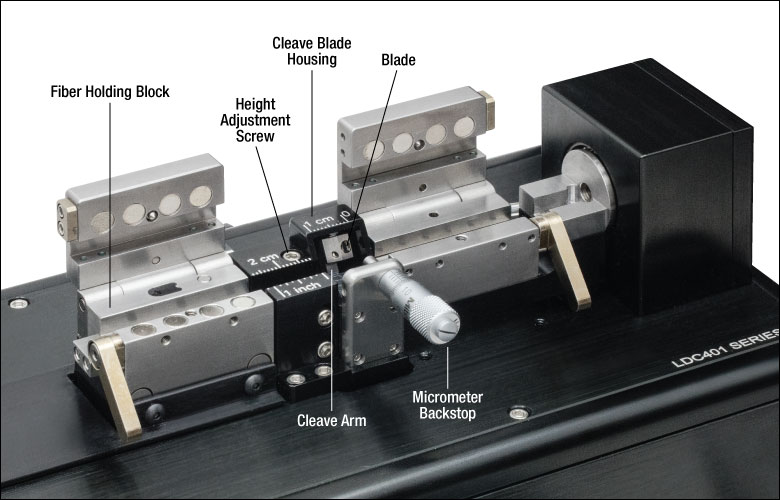

Cleaving:
After a diamond is marked it is sent to a cleaver or a sawyer, depending on the stone. When the stone is very large and valuable, cleaving it is a critical process, because a mistake by the planner or the cleaver can shatter the diamond. The cleaver's job is to cut the diamond into two pieces to bring out the best angles and establish what the final cut will be. Cleaving is performed by striking the stone with a sharp blow from a blade or hammer. However, some stones have too many stress points and might fragment if cleaved, so they must go to the sawyer. This process is extremely meticulous and time-consuming.
